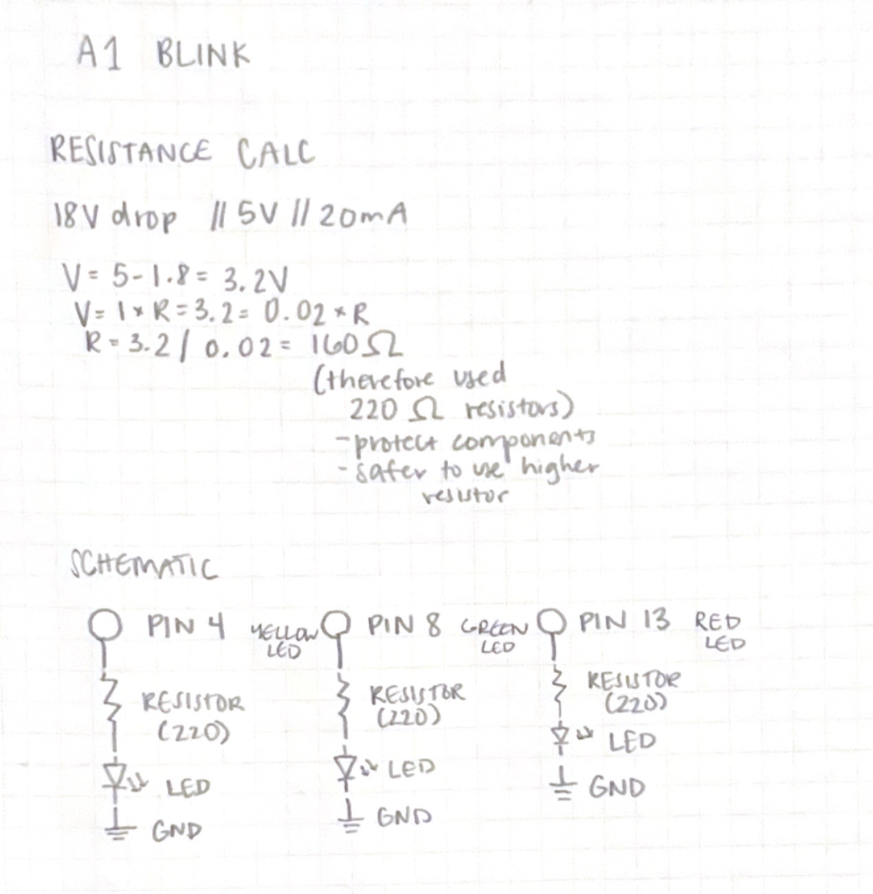
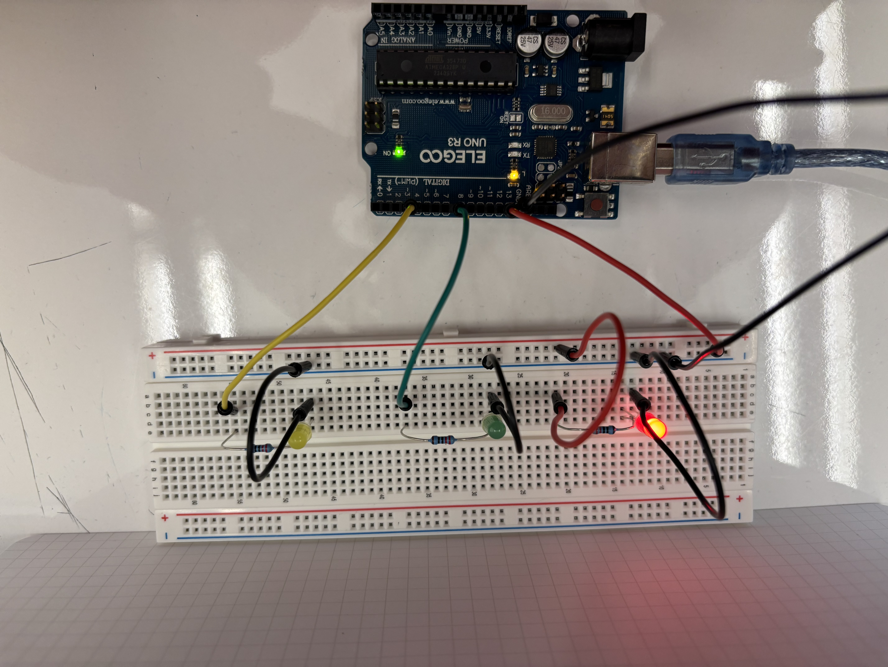
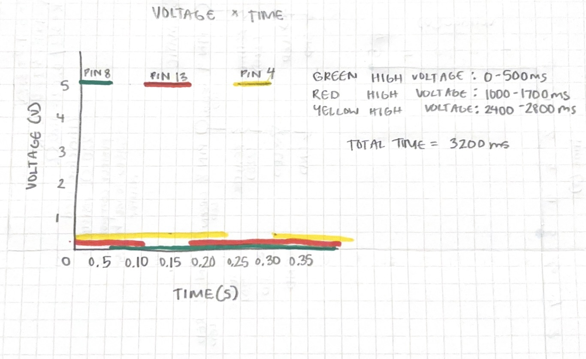

Here is all the documentation for assignment 1!

image of my schematic for the circuit & resistance calculation

image of my 'Blink' circuit, with bread board being connected to Arduino with green wired connected to pin 8, red wire connected to pin 13, yellow wire connected to pin 4, and black wire connected to GND. Resistors and LEDS are in the bread board next to associated wire.
Code:
// the setup function runs once when you press reset or power the board
void setup() {
// initialize digital pin LED_BUILTIN as an output.
pinMode(8, OUTPUT);
pinMode(13, OUTPUT);
pinMode(4, OUTPUT);
}
// the loop function runs over and over again forever
void loop() {
digitalWrite(8, HIGH); // turn the green LED on (HIGH is the voltage level)
delay(500); // wait for a second
digitalWrite(8, LOW); // turn the green LED off by making the voltage LOW
delay(500);
digitalWrite(13, HIGH); // turn the red LED on (HIGH is the voltage level)
delay(700); // wait for a second
digitalWrite(13, LOW); // turn the red LED off by making the voltage LOW
delay(700);
digitalWrite(4, HIGH); // turn the yellow LED on (HIGH is the voltage level)
delay(400); // wait for a second
digitalWrite(4, LOW); // turn the yellow LED off by making the voltage LOW
delay(400); // wait for a second
}
Circuit Operation:
Answers to Questions:
1. 
Image of my Voltage x Time graph. I chose random numbers when I was initally making the milliseconds for my code which is why I ended up with 500ms for green, 700ms for red, and 400ms for yellow. The graph shows when each of these colors are at high voltage(LED is lit) and at low voltage(LED is off) during the 3200ms duration which I calculated by adding the loe voltage and high voltage times for each color: 1000ms (green) +1400ms (red) +800ms (yellow).
2. Max amount of current for the Arduino is 200mA and each LED is 20mA so I can blink 10 LEDs independently at a time.
4. About 10 to 12 milliseconds is how fast you can blink your LEDs and no longer be able to tell that the LEDs are blinking.
5. I used ChatGPT to help me understand how to update my style.css file in order to make the website look organized with my inputted information.